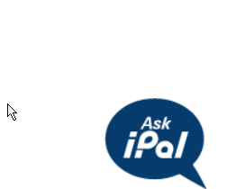

Acc. Takeover (OTP exposure)
- Some web applications reveal the right OTP or verification code in response itself
- Many websites are vulnerable to this attack, where in the website reveals verification code to the attacker which is going to be sent in the victim's device.
- Example 1
- Visit https://www.icicicareers.com/website/
- Open AskiPal
- Its asks for Mobile for OTP
- Input your number and start burp
- Burp will intersept. Intercept the response

- On next forward youll get the OTP

- Example 2
- Visit http://tokree.co.in/Register